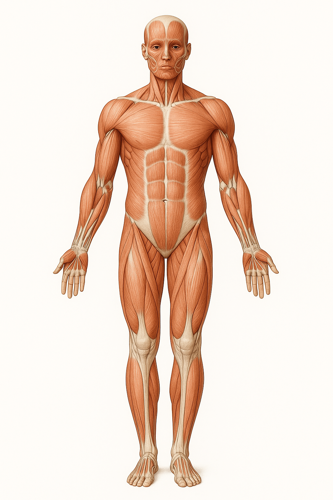

Physio BodyMap – Schmerzpunkte & Notizen
Realistische Muskelansicht mit frei platzierbaren roten Markierungen und Notizen.
Bedienung: Klick auf den Körper setzt einen roten Kreis. Danach kannst du eine Notiz eingeben. Klick auf einen Kreis, um die Notiz zu bearbeiten oder den Punkt zu löschen.
Vorderseite

Rückseite

Gespeicherte Markierungen & Notizen